12月
12 月的每日总结
12 月了时间过的真快。....
JavaScript 语句后应该加分号么？ - 贺师俊的回答 - 知乎 关于这个问题我一贯的倾向是我不会主动写不必要的分号，依靠格式化工具自动添加分号。我倾向于无分号派 (^ 人 ^) 。
不要奢望工具能解决人的问题
分号也是工具，一律添加不如不要。他应该要在合适的位置去解决歧义，而非漫天都是。
QQ 邮箱 自动化脚本 删除收信规则
之前因为一些原因在 QQ 邮箱中添加了很多的收信规则，现在想删除。但一个一个点实在太麻烦了，故写了如下脚本
javascript
const qAll = (s) => top[1].document.querySelectorAll(s);
setInterval(() => {
[...qAll(`[id*="ruleRc_"]`)]
.filter((el) => el.textContent.includes("移动到 邮件归档"))[0]
.querySelector(" div.col3 > a:nth-child(2)")
.click();
setTimeout(() => {
document.querySelector("#QMconfirm_QMDialog_confirm").click();
}, 100);
}, 1000);
这个脚本很容易懂，也可以很容易的修改其中自定义的过滤规则来决定要删除什么样的收信规则
阿里 iconfont 多颜色设定尝试
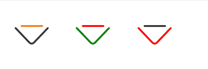
html
经过一定的处理后可以通过CSS 变量来指定一个多色的 icon 其中一部分的颜色
tailwind css的 ui 开发工具
获取当前路由的 child (子路由) 选中的哪一个 route
typescript
const cur = route?.routes?.find((el) => matchPath(location.pathname, el))
typescript enum 获取 key 的类型 type
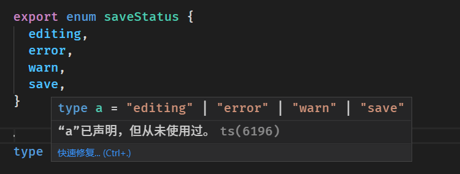
typescript
export enum saveStatus {
editing,
error,
warn,
save,
}
type a = keyof typeof saveStatus
ts 枚举的零值导致的隐式转换问题
例如我们有上面 saveStaus 这个枚举变量
然后我们写出了如下代码
typescript
function test(s?: saveStatus) {
if (s) {
console.log(s, saveStatus.error)
}
console.log(s || saveStatus.error)
}
这里有两个错误，思考下
1
if 的本意是想判断 s 有没有被传入，但当输入是这样的时候 test(saveStatus.editing) 就出现了问题，因为 enum 的性质 saveStatus.editing 的值是 0 这个 if 就没有符合我们的本意了。
1
需要修正的话条件应该改成 s !== undefined
2
console.log(s || saveStatus.error) 的本意也是想在 s 没有被传入的时候有一个兜底的值，但和1的问题一样，saveStatus.editing的值是0导致他打印的是 saveStatus.error 而非预想的 s
这两个问题都是 0 的问题，而 0 来自于 enum 第一项是从零开始这个规定，所以我们想要优雅的解决这样问题的话最后的方案就是让他的第一项不是从零开始就行了
typescript
enum saveStatus {
editing = 1,
error,
warn,
save,
}
把这个 saveStatus 再代入上面的代码中就符合我们的预期了~ 🎉
结论： 使用 enum 最好将第一项设置为 1
错误的 null 设计
在 Java 中
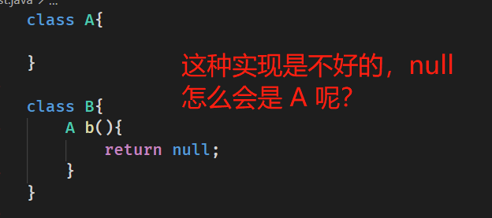
ts 的实现是正确的，这里就是应该报错

在我看来 null 可以看做是所有对象的父类型，那么把 父类型赋值给 子类型就是显而易见的错误，不明白为什么有人维护 null 可以被赋值给 其他类型这个做法
Tony Hoare，null 的发明者，发表过演讲 “Null References: The Billion Dollar Mistake”。著名的十亿美元的错误从此而来
数据库异常数据监控思考
刚碰到一个接口报错的问题，经排查是有一条数据不对劲
于是我想是不是可以专门写一个检测异常数据的监控程序来检测是否出现了这种数据
目前的想法是定时执行一些 SQL 如果这些 SQL 的返回不符合预期则表明数据出现了问题，然后提醒开发人员及时的进行排查
例如某个表的某个字段按正常逻辑来说不会是 null 那就写一条 SQL 来统计这个字段为 null 的数据有多少条，超过 0 条的就发送报警信息
像这样的 SQL 或许可以称之为 数据库的测试用例 ？
Mbrush 开源代码 Mbrush 是一个手持打印机
今天对博客进行了一波修改，从使用 lute 对文章进行渲染改成了直接嵌入使用md2website 生成的 HTML ，效果还行。
图片压缩工具 Optimizilla在线图片优化器
他的压缩效果相当的好，花朝日（花朝节） 这个文章中的「眉眼」图原大小为 12M，压缩后只有 2.89M 而且对图片质量的损失我是基本看不出来的
定义一个放置区
当拖拽一个项目到 HTML 元素中时，浏览器默认不会有任何响应。想要让一个元素变成可释放区域，该元素必须设置 ondragover 和 ondrop 事件处理程序属性，下面的例子通过简单的事件处理展示了如何使用这些属性：
Drop Zone
注意每个处理程序调用 preventDefault() 来阻止对这个事件的其它处理过程（如触点事件或指针事件）。
看着问题我想了一下我的希望，突然发现我不知道希望是什么。
翻阅了一下字典：
这里应该讲的是第二种：心愿、理想
我问自己，「我的心愿是什么？我的理想是什么？」一时间有许多东西浮上心头。
例如：
考清华北大
考上一本
考上二本
找个好工作
身体健康
......
随即心里又浮起一问：这是你的吗？ 再思考，我一直在放弃，一直在失败...
我还有希望吗？
心愿和理想是有的，虽然越来越卑微
我还有希望吗？
大概....没有了吧。
甘心吗？
不甘心！
虽屡战屡败，将至死方休！
网页表单自动填写的简单方法
网页刷新后能不能保持填报系统中已选择的标签不变？ 或许可以写一个填写表单的油猴脚本来优化这样的重复劳作
1
安装 Edeg 浏览器（其他浏览器也可以，但一些步骤会有点区别，这里只讲在 Edeg 中的操作）
2
打开表单所在网页（例：测试页面_普通表单）
3
按下 F12 键打开devTools
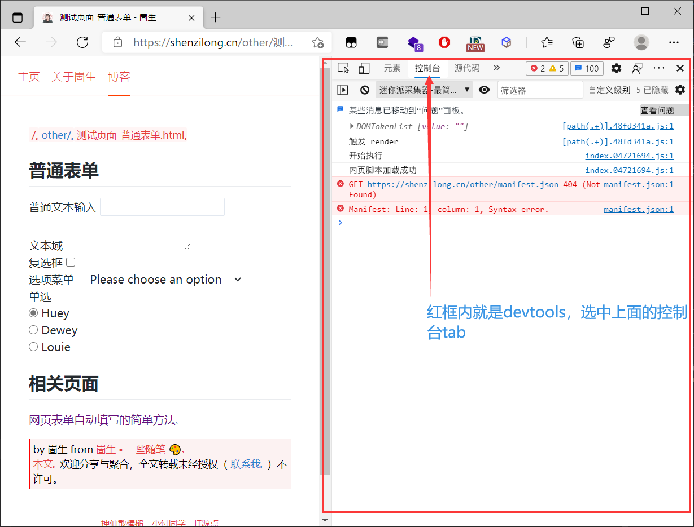
4
如下 gif 所示去复制输入框的 js 路径
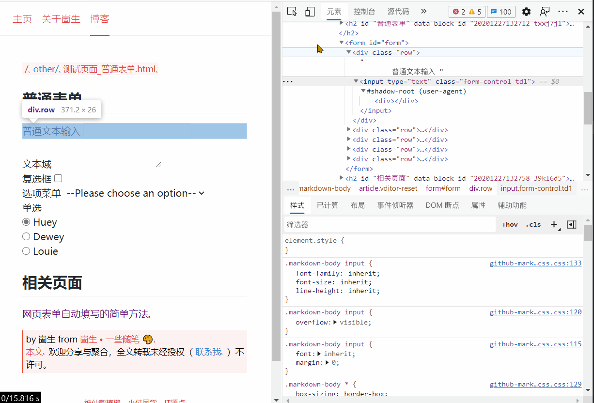
5
然后回到控制台选项卡粘贴，结果如下

6
另外回忆一下刚刚选中的元素是
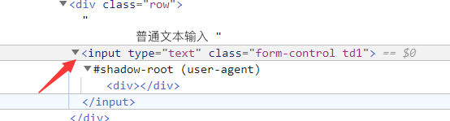
这样的，这里要选中 input 的标签然后右键复制 js 路径
7
左侧还有一个文本域的表单项，他长这样 ：textarea
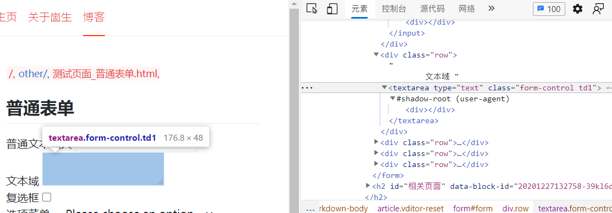
8
同样按照 第四步 那样的流程去复制他的 js 路径得到 document.querySelector("#form > div:nth-child(2) > textarea")
9
对于 input type="text" 和 textarea 这样的表单项可以通过这样的代码进行赋值
1
document.querySelector("#form > div:nth-child(1) > input").value=`你要输入的文本`
2
document.querySelector("#form > div:nth-child(2) > textarea").value=`你要输入的文本`
10
copy 上面的代码进行尝试可以发现成功的填充了左侧的表单项
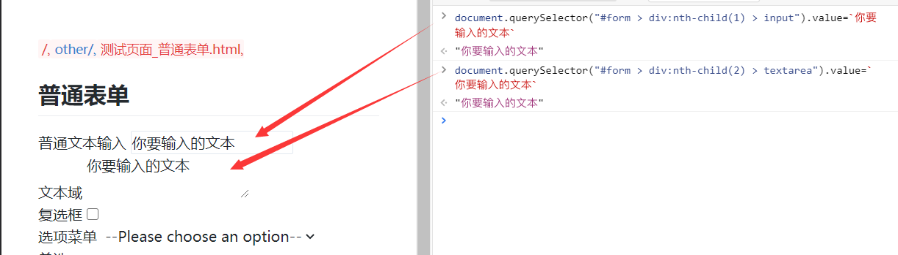
11
但左侧还有选项菜单、单选项、复选框、等形式的表单项，对于他们的赋值步骤可以参考下表
选择器：之前复制的路径其实就是一段通过特定规则选中特定元素的 js 代码 document.querySelector("#form > div:nth-child(1) > input").value=`你要输入的文本` , 下边的表中用 「选择器」代指这段代码
12
对页面中的所有表单项进行上面的操作得到代码如图
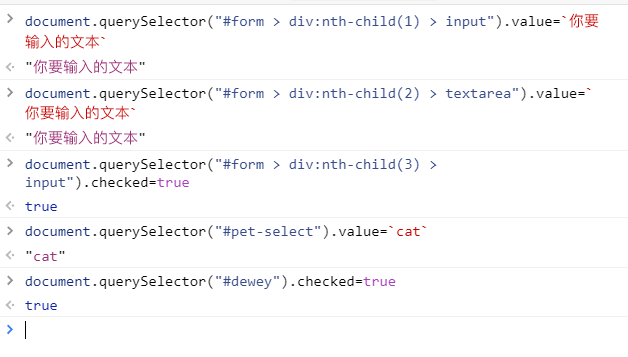
13
将它们像下面这样整理一下复制到文本中
javascript
document.querySelector("#form > div:nth-child(1) > input").value=`你要输入的文本`
document.querySelector("#form > div:nth-child(2) > textarea").value=`你要输入的文本`
document.querySelector("#form > div:nth-child(3) > input").checked=true
document.querySelector("#pet-select").value=`cat`
document.querySelector("#dewey").checked=true
14
然后F5 刷新页面，复制上面的的代码放到控制台中执行
15
可以看见自动填表成功了
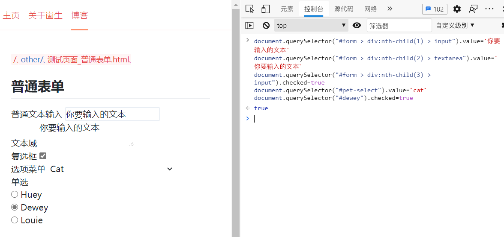
16
现在虽然自动填表成功了，但每次要打开 devtools 粘贴代码有些繁琐，可以通过 Bookmarklet 这样的小技巧来实现只要点一下就成
17
去 bookmarkleter 将 js 代码转为 Bookmarklet 代码
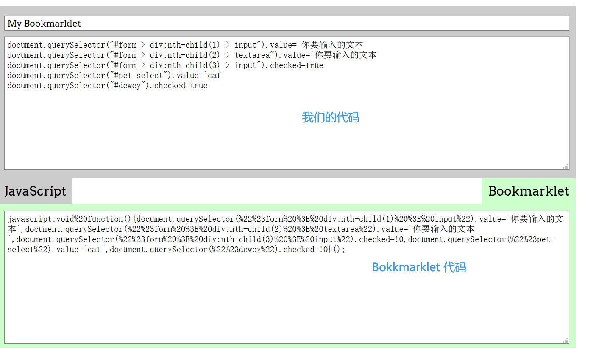
18
创建一个收藏夹，然后将我们的Bookmarklet 代码填写到URL栏中
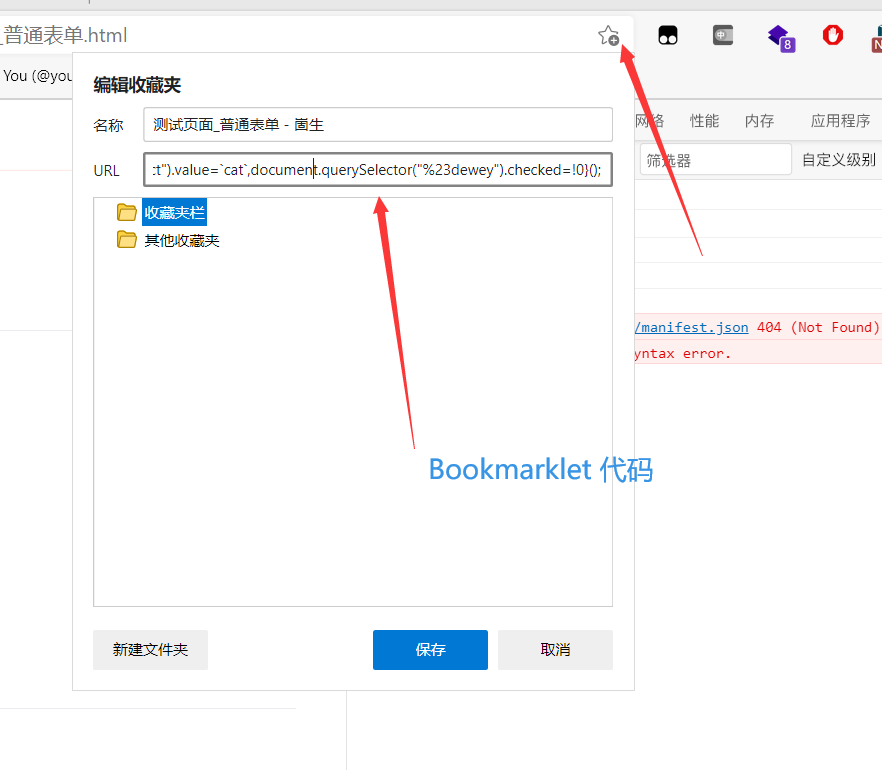
19
终于完成了只要点一下就自动填充的功能了 🎉 ，俗话说磨刀不误砍柴工，你如果有许多需要重复填写的表单的话不妨尝试一下
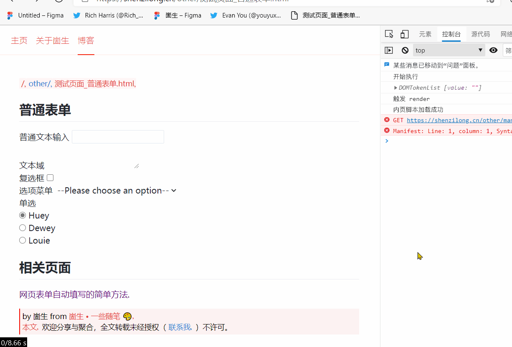
今天又折腾了一下自己的博客和 OceanPress ,改成了使用 custom Element 来组织页面结构，另外博客中的链接也终于可以正常跳转，页面不会在没有必要的时候刷新了。
以前在知乎提的一个问题 怎么让css font-size 尽量大 但不要溢出？
例如 box 宽度是 100px 高度是 40 px 内有不确定个数的文字，需要让 里面的文字尽量大，或者尽量接近 40px 大小，但当文字数量比较多的时候字体应该要变小该如何实现？